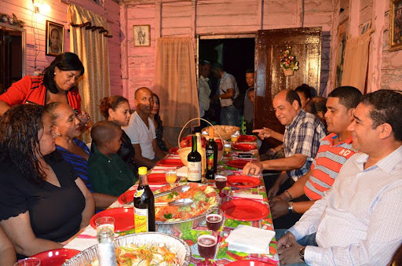

Dominican Dinner Dishes
Dinner in the Dominican Republic is a lighter, often simpler meal, but it's still full of comfort and flavor. Check out these classic Dominican dinner favorites.
Popular Dinner Items
- Tostones con Queso – Fried green plantains served with melted cheese or salami.
- Pan con Aguacate – Fresh bread with sliced Dominican avocado and a sprinkle of salt.
- Sopa de Pollo – Light chicken soup often served in the evenings or during rainy weather.
- Yuca con Mojo – Boiled cassava with a garlic citrus sauce.
Dinner in the Dominican Republic is typically lighter than lunch, but still comforting and satisfying. Many households enjoy fried plantains, sandwiches, or a bowl of soup.
Street food also plays a role in the dinner hour — especially tostones, pastelitos, and empanadas from local food vendors.
While it’s a quieter mealtime, dinner still reflects the warmth and hospitality of Dominican culture — often enjoyed while gathering with friends or relaxing after a long day.
Evening Traditions
Evenings in the Dominican Republic are often relaxed and community-focused. After dinner, people gather outside their homes to chat with neighbors, listen to music, or enjoy a cool breeze on the porch.
Dinner might be followed by a dessert like dulce de leche, coconut candy, or a small serving of flan. It’s also common to sip on coffee or herbal tea while spending time with loved ones before ending the day.
